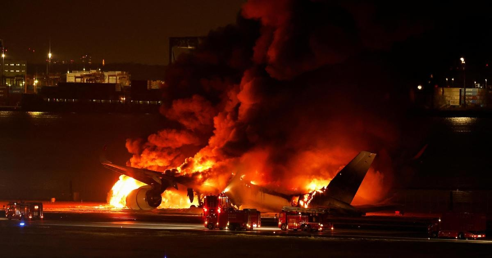

5 dead, hundreds evacuated after Japan Airlines jet and coast guard plane collide at Tokyo's Haneda AirportA passenger plane and a Japanese coast guard aircraft collided on the runway at Tokyo's Haneda Airport on Tuesday and burst into flames. Transport Minister Tetsuo Saito confirmed that all 379 occupants of Japan Airlines flight JAL-516 got out safely before the plane was entirely engulfed in flames. The pilot of the coast guard plane also escaped, but five crewmembers died, Saito said. Local TV video showed a large eruption of fire and smoke from the side of the Japan Airlines plane as it taxied after landing. The area around the wing then caught fire. Footage an hour later showed the plane fully on fire. Video posted to social media platform X showed people sliding down an inflatable emergency slide from the side of the passenger plane while flames shot out from the rear of the aircraft. The JAL plane was an Airbus A-350 that had flown from Shin Chitose airport, near the city of Sapporo, to Haneda, the transport minister said. Coast Guard spokesperson Yoshinori Yanagishima said its plane was MA-722, a Bombardier Dash-8. "I felt a boom like we had hit something and jerked upward the moment we landed," a passenger on the Japan Airlines flight told Kyodo news agency. "I saw sparks outside the window and the cabin filled with gas and smoke." Swede Anton Deibe, 17, who was a passenger on the Japan Airlines plane, told Swedish newspaper Aftonbladet that "the entire cabin was filled with smoke within a few minutes. We threw ourselves down on the floor. Then the emergency doors were opened and we threw ourselves at them. "The smoke in the cabin stung like hell. It was a hell. We have no idea where we are going so we just run out into the field. It was chaos," added Deibe, who was traveling with his parents and sister. Other passengers described a chaotic scene on board. "Smoke began to fill the plane, and I thought, 'this could be really bad,'" an adult male passenger told reporters at the airport. "An announcement said doors in the back and middle could not be opened. So everyone disembarked from the front," he said. A female passenger said it had been dark on board as the fire intensified after landing. "It was getting hot inside the plane, and I thought, to be honest, I would not survive," she said in comments shown on broadcaster NHK. Saito said Haneda is currently closed while the collision is under investigation by aviation safety investigators and police, but that they are doing their best to reopen the airport Wednesday or even sooner. He added that said officials are doing their utmost to prevent any delays in the relief goods delivery and other operations for the disaster-hit region. Haneda is one of the busiest airports in Japan, and many people travel over the New Year holidays. The incident came just a day after a series of , killing almost 50 people in the Ishikawa prefecture, and Kyodo said the coast guard plane had been due to head to Niigata to deliver relief goods to residents affected by the disaster. The AFP contributed to this report. for more features. |
 |